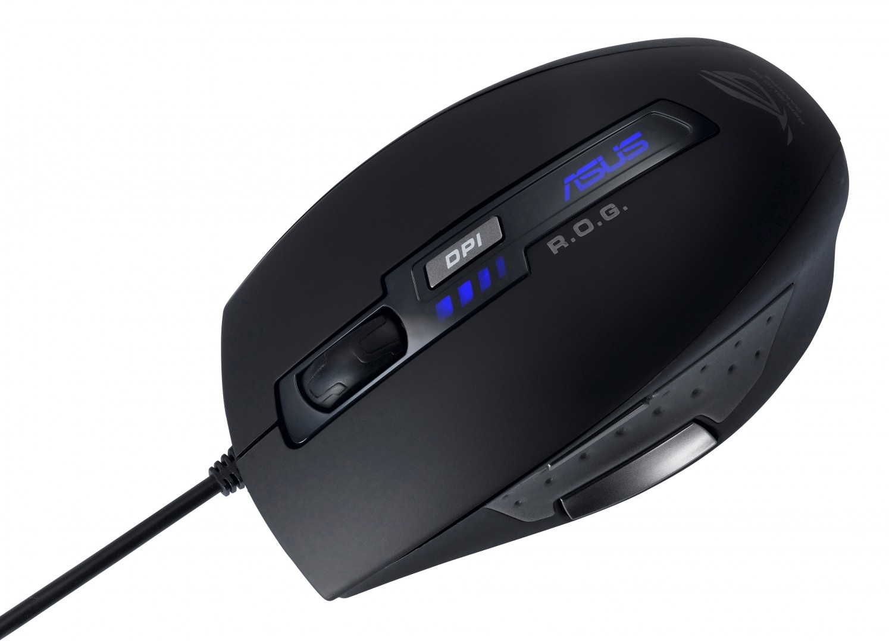

Jednym z najnowszych rozwiązań jest zastosowanie diody laserowej zamiast diod świecących, co jeszcze bardziej podnosi rozdzielczość myszy, a tym samym jej czułość. Zaletą tego rozwiązania jest brak mechaniki, która łatwo ulega zanieczyszczeniu i wymaga częstej konserwacji oraz to, że mysz działa bezproblemowo na praktycznie każdej powierzchni (oprócz szkła, granitu i lakierowanego drewna). Nie świeci w oczy światłem widocznym. Przedsiębiorstwo A4Tech zaprezentowało w czerwcu 2012 roku technologię Holeless, która pozwala na konstrukcję myszek bez otworu na laser. Dzięki temu rozwiązaniu sensor laserowy jest chroniony przed zabrudzeniami, a myszka może pracować na każdej powierzchni – zarówno mokrej, jak i brudnej.